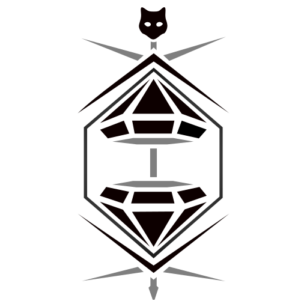

APEX NOW アップグレード早見表
Apex 全レジェンドのアップグレード早見表
試合中にレベル2・3で2つから1つを選ぶアップグレードを、全28レジェンド分まとめています。名前と効果は EA 公式の日本語パッチノートを優先し、公式で確認できない部分はコミュニティ Wiki（apexlegends.wiki.gg）の説明を訳して載せています。「（名称未確認）」は公式の日本語名が見つからなかったものです。
最終更新：2026/10/28 09:51 （データの最終チェック日時）
オルター アッシュ アクセル バリスティック バンガロール ブラッドハウンド カタリスト コースティック コンジット クリプト ヒューズ ジブラルタル ホライゾン ライフライン ローバ マッドマギー ミラージュ ニューキャッスル オクタン パスファインダー ランパート レヴナント シア スパロー ヴァルキリー ヴァンテージ ワットソン レイス
Lv2 Eye to Another World（名称未確認）
リコンクラスのパークをすべて得る。
出典（Wiki） Controller of Worlds（名称未確認）
コントローラークラスのパークをすべて得る。
出典（Wiki） Lv3 Staring into the Void（名称未確認）
ヴォイドパッセージの敵スキャン時間が15秒延びる。
出典（Wiki） ヴォイドブリーチャー
（効果の全文は日本語記事に記載なし）移動速度上昇が30%から15%に弱体化された、と記載。
出典（公式） 確認日：2026/09/29
Lv2 射程距離延長
フェーズティアの射程を25m延長する。
出典（公式） アルティメットのクールダウン
フェーズティアのクールダウンを30秒短縮する。
出典（公式） Lv3 グリーディースネア
アークスネアの持続時間が3倍（5秒→15秒）になり、複数の敵を拘束できる。
出典（Wiki） 確認日：2026/09/29
Lv2 スライディングシューター
スライディング中に撃った弾がマガジンではなくインベントリから直接供給される（最大マガジンサイズの半分まで）。
出典（公式） ロングホール
戦術アビリティの最大スライドブースト時間が5秒に戻る。
出典（公式） Lv3 ドローンデプロイヤー
アルティメットのクールダウンを90秒に戻す。
出典（公式） スーパースライダー
ニトロゲートのクールダウンが5秒短縮され、ワールド内の最大設置数が+1される。
出典（公式） 確認日：2026/09/29
Lv2 追加バレット
戦術アビリティのチャージが1つ増え、合計3チャージになる。
出典（公式） トラップモード
設置したウィスラーが15秒間持続し、触れた敵に35ダメージを与える。
出典（公式） Lv3 静かな時間
戦術アビリティがオーバーヒートを付与しない代わりに、命中時にサイレンスとスロウを付与する（クールダウンは長くなる）。
出典（公式） キリングタイム
アルティメットの持続時間を15秒延長する。
出典（公式） 確認日：2026/09/29
Lv2 援護しろ
煙の中にいる味方の体力が回復する。駆け足を発動させた敵を自動でピンする。
出典（Wiki） 帯電煙幕
戦術アビリティが帯電し、敵のアルティメットに100ダメージを与え、敵の戦術アビリティを破壊する。
出典（公式） Lv3 ECMペイロード
アルティメットが帯電し、与えるダメージが10増加し、敵の展開型アイテムを破壊する。
出典（公式） 名誉勲章
復活が速くなり、ノックダウンされた味方に向かって走るとパッシブが発動する。
出典（公式） 確認日：2026/09/29
Lv2 ヒドゥンサイト
アルティメット使用で戦術アビリティのクールダウンがリフレッシュされ、クローク中に使う戦術アビリティの視覚効果が敵から見えなくなる。
出典（公式） バードアイ
白いカラスが分裂し、最も近い2体の敵（異なる部隊）の方向へ飛ぶ。
出典（公式） Lv3 Hunter's Agility（名称未確認）
全能の目の発動が速くなり、クールダウンが5秒短縮される（25秒→20秒）。
出典（Wiki） トゥループレデター
射撃してもクロークが解除されず、一時的に中断されるだけになる。
出典（公式） 確認日：2026/09/29
Lv2 フェロドア
パッシブで補強できるドアの最大数が6になる（壊れたドアの再構築・補強）。
出典（公式） レジリエントベール
アルティメットの持続時間が延び、アルティメットのクールダウンが150秒から120秒に短縮される。
出典（公式） Lv3 ヒドゥンスパイク
スパイクの範囲が非アクティブ時に敵から見えなくなる。
出典（公式） フェロー・フレンジー
スパイクの最大設置数が1増え、スパイクは50%小さくなるがティックダメージの速度が上がる。
出典（公式） 確認日：2026/09/29
Lv2 追加トラップ
戦術アビリティのチャージが1つ増え、同時に設置できる数が2増える。
出典（公式） Lv3 ガスファイター
ガスの中にいる間、戦術アビリティのリチャージが300%速くなる。
出典（公式） パーティクルディフューザー
アルティメットの半径が50%増加する。
出典（公式） 確認日：2026/09/29
Lv2 同時発生
最初の発動から10秒以内なら、エネルギーバリケードをクールダウンなしで1回再発動できる（ジャマーは2個減り、密集して出現）。
出典（公式） ジャムアップ
ジャマーの範囲が25%拡大し、ジャマーでダメージを受けた敵のHUDが10秒間ジャミングされる。
出典（公式） Lv3 インスタントバリケード
レイディアントトランスファーの一時シールドの一部を即座に得る（再生時間は短くなる）。
出典（公式） エンデュアリングバリケード
レイディアントトランスファーの一時シールド再生がダメージを受けても続く（リングダメージでは回復しない）。
出典（公式） 確認日：2026/09/29
Lv2 Network Expansion（名称未確認）
ニューロリンクとドローンEMPの範囲が25%広がる（30m→37.5m）。
出典（Wiki） Ally.MoveTo()
すべての味方の位置へ素早く移動できる。
出典（公式） Lv3 エネルギー結合
スキャンビーコンの使用とドローンによる敵のスキャンでアルティメットチャージを得る（EMP後5秒間は無効、1人スキャンにつき5）。
出典（公式） Hackathon（名称未確認）
スパイドローンのクールダウンが20秒短縮され（40秒→20秒）、ドローンEMPの発動時やドローンを失ったときに移動速度が上がる。
出典（Wiki） 確認日：2026/09/29
Lv2 パイロテクニック
マザーロードの爆発後に炎の塊が残る（持続する炎の半径が2倍に）。
出典（公式） リイグニッション
敵に爆発ダメージを与えるとアルティメットがチャージされる（爆発ダメージ3につき1秒短縮）。
出典（公式） Lv3 ビッグバン
ナックルクラスターの爆発範囲が50%拡大する。
出典（公式） スティッキーボム
ナックルクラスターの最初の投射物が25%大きくなり敵に貼りつく。敵に7回ヒットするごとにナックルクラスターのクールダウンが1秒短縮される。
出典（公式） 確認日：2026/09/29
Lv2 サンダードーム
ドームが帯電し、最初に侵入した敵に50ダメージを与えて移動速度を下げる。
出典（公式） ドームヒーリング
ドームの持続時間が4秒延び、ドーム内では小回復アイテムの回復量が2倍になる。
出典（公式） Lv3 トリプルボンバードメント
防衛爆撃を3チャージに分割する（1回ごとの範囲とミサイル数は減る）。
出典（公式） ファストショッティ
ショットガンを持っていても収納時と同じ速度で動け、ノックするとショットガンが自動でリロードされる。
出典（Wiki） 確認日：2026/09/29
Lv2 グラビティブーツ
空中でしゃがむとより速く落下する。
出典（公式） ニュート・スクート
グラビティリフトから出た後、ジャンプを押すとグライドする。
出典（公式） Lv3 エネルギー保存
スペースウォークで着地を和らげると、シールドが25回復する。
出典（Wiki） ノックエキスパート
ノック時に戦術アビリティのチャージを得る。
出典（公式） 確認日：2026/09/29
Lv2 Extended Flight（名称未確認）
コンバットグライドの時間が1.5秒延びる（4秒→5.5秒）。
出典（Wiki） Battpack（名称未確認）
シールドバッテリーを1スタックに1つ多く持てる（2→3）。デスボックスのバッテリー数が見える。
出典（Wiki） Lv3 Enhanced Radio（名称未確認）
D.O.C.ヒールドローンを指示できる範囲が50%広がる。
出典（Wiki） Tactical Cooldown+（名称未確認）
D.O.C.ヒールドローンのクールダウンが10秒短縮される（45秒→35秒）。
出典（Wiki） 確認日：2026/09/29
Lv2 Wolf's Claws（名称未確認）
盗賊の相棒でテレポートした後、移動速度が上がり、武器を素早く構えられる。
出典（Wiki） 
Shopping Spree（名称未確認） ブラックマーケットから部隊が取れるアイテムが1つ増える（2→3）。
出典（Wiki） Lv3 Escape Artist（名称未確認）
盗賊の相棒でテレポートした後、ダメージを受けるまでシールドが25回復する。
出典（Wiki） ブランニューバッグ
選択すると部隊全員が紫のバックパックを得る（ゴールドバッグ廃止のため）。
出典（公式） 確認日：2026/09/29
Lv2 ガンランニング
パッシブの移動速度増加がSMGとピストルでも有効になる。
出典（公式） ファイヤーボール
移動しながら地面にマグマの塊を落とし、マギーが受ける火ダメージが50%減る。
出典（公式） Lv3 Drillslinger（名称未確認）
ライオットドリルのチャージが1つ増えるが、持続時間は25%短くなる（9秒→6.75秒）。
出典（Wiki） Big Drill（名称未確認）
ライオットドリルの幅と深さが50%広がる。
出典（Wiki） 確認日：2026/09/29
Lv2 Renaissance Man（名称未確認）
すべてのクラスのワールド内アイテム（アサルトボックス、ケアパッケージのスキャン、調査ビーコン、リングコンソール）を使える。
出典（Wiki） Boozle-Eye（名称未確認）
デコイを撃った敵もスキャンされる。
出典（Wiki） Lv3 Me Two（名称未確認）
サイクアウトのチャージが1つ増え、デコイを2体同時に出せる。
出典（Wiki） Bamboozle Bonus（名称未確認）
デコイで敵をだますと、サイクアウトのクールダウンがリセットされる。
出典（Wiki） 確認日：2026/09/29
Lv2 ストロングホールド
キャッスルウォールの体力が500増え（合計1250）、帯電が120秒長く続く（120秒→240秒）。
出典（Wiki） レディー・トゥ・ランブル
味方を蘇生すると武器が自動でリロードされ、完全回復が発動する。
出典（公式） Lv3 Ultimate Savior（名称未確認）
キャッスルウォールを叩きつけたとき、着地範囲にいる味方のシールドが15秒間回復し続ける。
出典（Wiki） 防衛線
戦術アビリティとリバイブシールドが敵を一度ノックバックする。
出典（公式） 確認日：2026/09/29
Lv2 スクワッドラッシュ
ジャンプパッドを使った全員が、着地時に興奮剤の効果を得る。
出典（公式） Lv3 デアデビル
シールド破壊時に高速リロードを得て、HPが少ないほど興奮剤サージの持続時間が延びる（最大延長3秒）。
出典（公式） トリプルジャンプ
ジャンプパッドから3回目のジャンプができる。
出典（公式） 確認日：2026/09/29
Lv2 フィールドリサーチ
調査ビーコンのスキャンに加え、すべてのリコンパークを得る。
出典（公式） リングマスター
リングコンソールへのアクセスに加え、すべてのコントローラーパークを得る。
出典（公式） Lv3 フィーリングジッピー
ジップラインガンのチャージが2つになる（通電中のジップラインで味方の速度と加速が上がる）。
出典（公式） ランディングギア
空中でのコントロールが強化され、激しい着地からの回復が速くなる。
出典（公式） 確認日：2026/09/29
Lv2 コンバット・リザーブ
弾薬所持数とグレネードスロットが増え、収納時リロードも得る。
出典（公式） 臨戦態勢
増幅バリケードの後ろにいてシールドが保たれている間、リロードが速くなり無限弾薬を得る。
出典（公式） Lv3 ランプアップ
シーラの射撃・展開中の移動速度がさらに上がる（104→139）。
出典（公式） 再構築モジュール
一定時間ダメージを受けないと、増幅バリケードが体力を回復しシールド部分を再構築する。
出典（公式） 確認日：2026/09/29
Lv2 Ultimate Cooldown（名称未確認）
フォージシャドウのクールダウンが30秒短縮される（180秒→150秒）。
出典（Wiki） Try To Hide（名称未確認）
アサシンの本能で表示される体力の低い敵のマーカーが2倍長く残る。
出典（Wiki） Lv3 Tactical Cooldown（名称未確認）
シャドウパウンスのクールダウンが5秒短縮される（20秒→15秒）。
出典（Wiki） Agile Assassin（名称未確認）
シャドウパウンスの発動とチャージが50%速くなる。
出典（Wiki） 確認日：2026/09/29
Lv2 ラスティングビート
ドームから離れた敵の位置を5秒間表示する。
出典（公式） エナジャイズフォーカス
戦術アビリティを敵に当てるとシールドが25回復する。
出典（公式） Lv3 ホームベース
ショーケース内で戦術アビリティのチャージが速くなる（倍率2.5、クールダウン8秒）。
出典（公式） スプリットフォーカス
戦術アビリティのチャージが2つになる（2025-09-10に不利な要素を削除）。
出典（公式） 確認日：2026/09/29
Lv2 エクストラトラップ
戦術アビリティのチャージが1つ増え、罠を1つ多く設置できる。
出典（公式） ハントターゲット
マークされた敵の方向に進むと移動速度が上がる。
出典（公式） Lv3 オルタネイトモード
アルティメットを3回チャージできるが、範囲が狭くパルス数が少なくなる。
出典（公式） ライフサイフォン
アルティメットで敵にダメージを与えると、自分の体力とシールドが回復する。
出典（公式） 確認日：2026/09/29
Lv2 空の目
スカイダイブ中の敵スキャンが視線を必要とせず範囲も広い（壁越しは100m、視線が通れば250m）。
出典（公式） フルカバー
ミサイルスワームの発射パターンが4x5になる（戦術クールダウン短縮も含む）。
出典（公式） Lv3 スーパーソニック
アルティメットの発射までの時間を40%短縮する。
出典（公式） エアリエルエキスパート
ジェットパックの水平速度と取り回しが大きく向上する（初期燃料消費が減り、総燃料はわずかに減る）。
出典（公式） 確認日：2026/09/29
Lv2 獲物のコントロール
リングコンソールとゾーンオーバーチャージへのアクセスを得る。
出典（公式） マークした敵のアイコンが壁越しに見え、一時的にハイライトされる。マークした敵の体力バーが部隊に表示される。
出典（公式） Lv3 敵にシグナルを送ると、その敵の部隊全体が追跡される。
出典（公式） スナイパーのマークにガンシールドが付く。
出典（公式） 確認日：2026/09/29
Lv2 ヘルプイズヒア
すべてのサポートパーク（サポートボックス、体力回復つきの素早い復活、バナーでMRB）を得る。
出典（公式） 敵へのダメージがアルティメットチャージに変換され、ノックでアルティメットチャージが30%増える。
出典（公式） Lv3 エネルギーヒーラー
小回復アイテムの回復量が2倍になる。
出典（公式） インターセプターパイロンの体力、回復速度、容量が2倍になる。
出典（公式） 確認日：2026/09/29
Lv2 Sixth Sense（名称未確認）
150m以内に新しい部隊が近づくと、虚空からの声が警告する。
出典（Wiki） フェーズドーム
アルティメットの発動を始めるとフェーズドームが生まれ、入った者は虚空に入る（30秒またはポータル設置まで）。
出典（公式） Lv3 Fast Phase（名称未確認）
虚空への発動が30%速くなる（0.8秒→0.5秒）。
出典（Wiki） ヴォイドジャンパー
戦術アビリティで虚空にいる時間が4秒から6秒に延び、虚空でダブルジャンプできる。
出典（公式） 確認日：2026/09/29
出典：EA 公式ニュース（日本語） ・Apex Legends Wiki